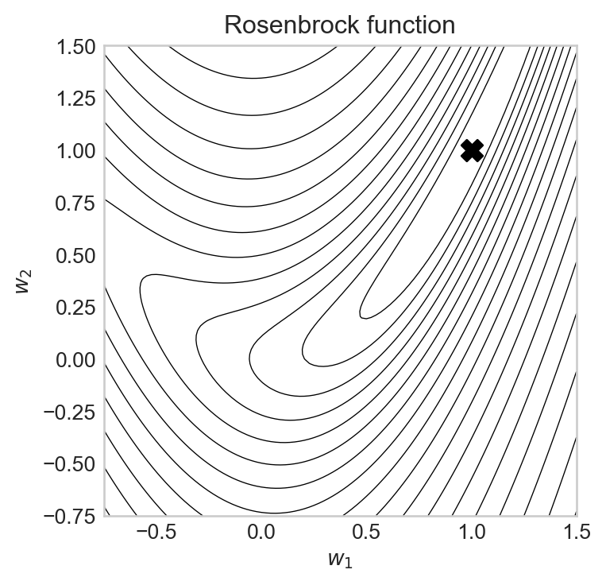
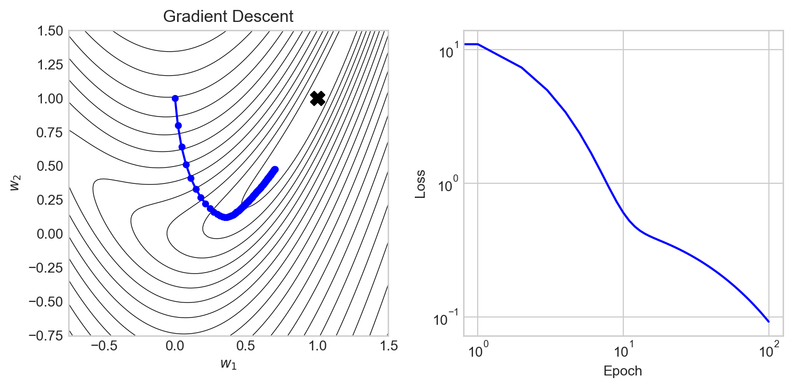
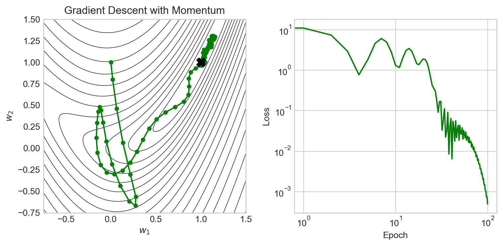
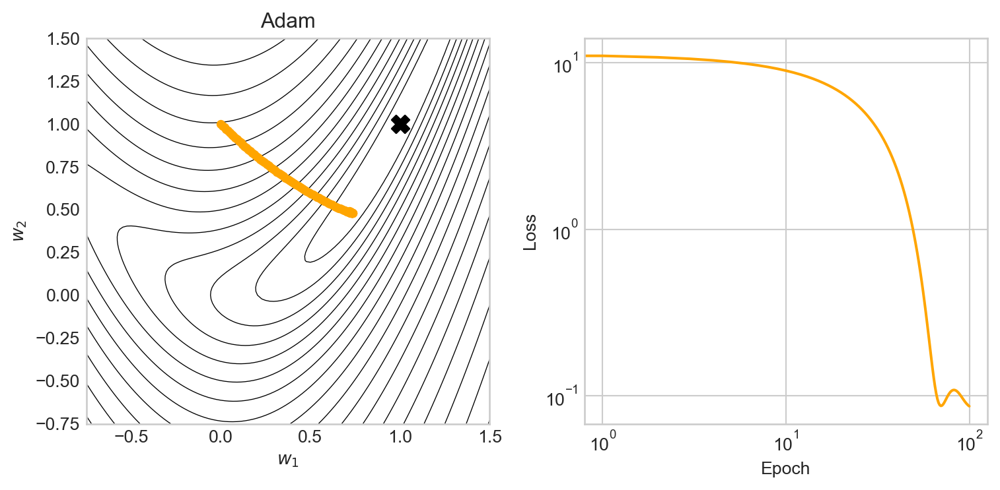
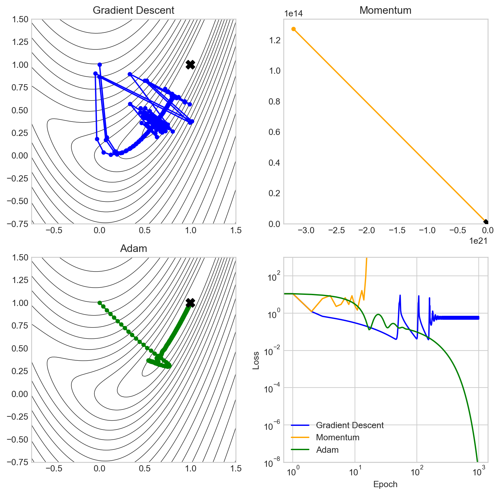
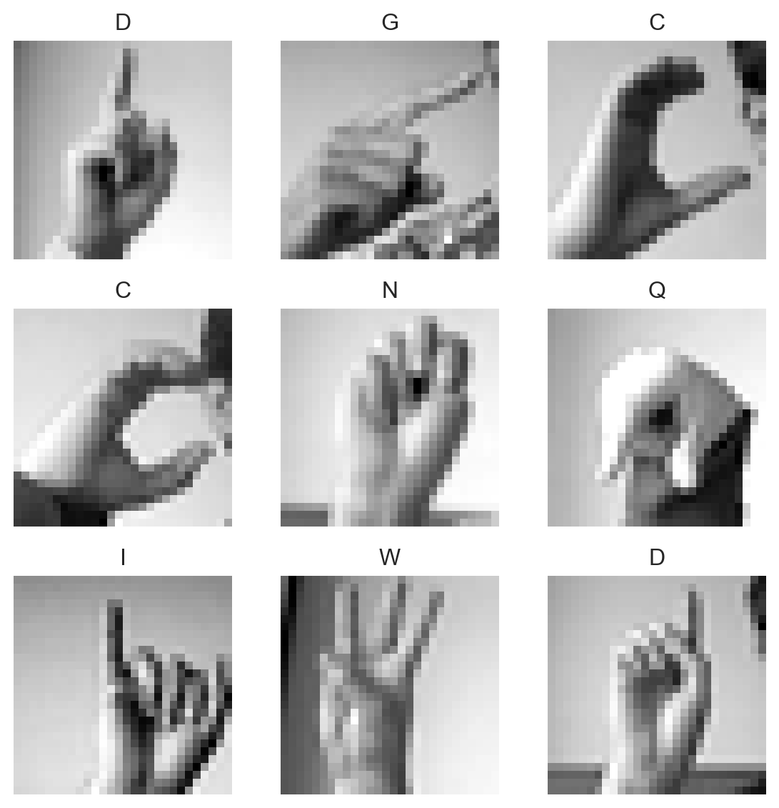
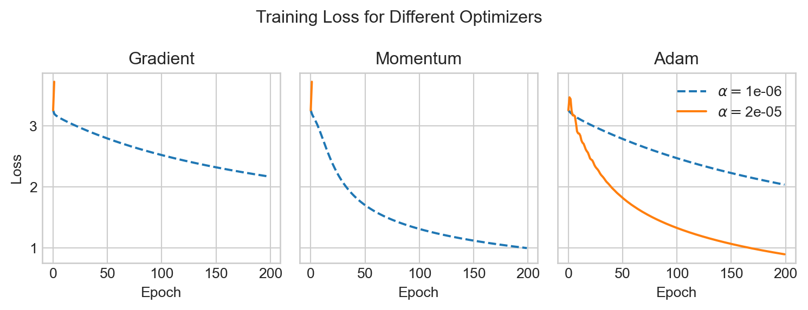
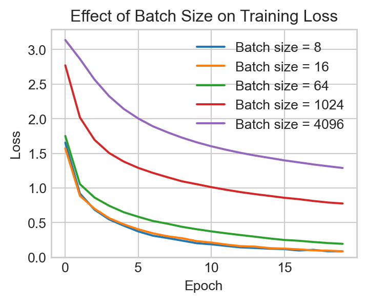

import torch
device = torch.device("cuda" if torch.cuda.is_available() else "cpu")11 Optimization Techniques: Algorithms and Batching
Beyond Gradient Descent
Open the live notebook in Google Colab.
Introduction
So far in these notes, we’ve primarily considered the problem of solving an optimization problem of the form
\[ \begin{aligned} \hat{\mathbf{w}} = \mathop{\mathrm{arg\,min}}_{\mathbf{w}} R(\mathbf{w})\;, \end{aligned} \]
where \(R(\mathbf{w})\) is some measure of loss such as mean-squared error or binary cross entropy. Our primary algorithmic tool for solving this problem computationally has been gradient descent:
Definition 11.1 (Gradient Descent (Constant Learning Rate)) In gradient descent with constant learning rate \(\alpha\), we start with some initial guess \(\mathbf{w}^{(0)}\) and then iteratively update our parameters according to the rule
\[ \begin{aligned} \mathbf{w}^{(t+1)} \gets \mathbf{w}^{(t)} - \alpha \nabla R(\mathbf{w}^{(t)})\;, \end{aligned} \tag{11.1}\]
until some measure of convergence or iteration limit is reached. Each iteration of Equation 11.1 is called an epoch of training.
In code, an implementation of gradient descent typically looks like this:
w -= alpha * gradwhere grad is the gradient of the loss with respect to the parameters w. Recently, we saw how the calculation of the gradient \(\nabla R(\mathbf{w})\) can be automated using PyTorch’s autograd system.
In this chapter, we’ll consider two limitations of classical gradient descent as described by Equation 11.1:
- Gradient descent does not use prior gradient information.
- Gradient descent requires us to compute the complete gradient \(\nabla R(\mathbf{w})\) in order to make a single update to the parameters \(\mathbf{w}\), which can be very expensive on large data sets.
Momentum and Adaptive Methods
Let’s first tackle limitation (1): gradient descent via Equation 11.1 doesn’t use any previously-calculated gradients. To perform the update in epoch \(t+1\), I need to calculate \(\nabla R(\mathbf{w}^{(t)})\), but I don’t use any of the gradient information \(\nabla R(\mathbf{w}^{(1)}), \ldots, \nabla R(\mathbf{w}^{(t-1)})\) that I calculated in the previous epochs. Can we find ways to use that information in a more effective way?
Experiment based on:
https://stmorse.github.io/journal/Momentum-vs-Acceleration.htmlIn this section, we’ll compare optimization algorithms on a simple two-dimensional function called the Rosenbrock function, which is given by
\[ \begin{aligned} R(w_1, w_2) = (1 - w_1)^2 + 10 (w_2 - w_1^2)^2\;. \end{aligned} \]
import torch
from matplotlib import pyplot as plt
def rosenbrock(w):
return (1 - w[0])**2 + 10 * (w[1] - w[0]**2)**2
def rosenbrock_contours(ax):
x1 = torch.linspace(-0.75, 1.5, 100)
x2 = torch.linspace(-0.75, 1.5, 100)
X1, X2 = torch.meshgrid(x1, x2)
Z = torch.zeros_like(X1)
for i in range(X1.shape[0]):
for j in range(X1.shape[1]):
Z[i, j] = rosenbrock(torch.tensor([X1[i, j], X2[i, j]]))
ax.contour(X1, X2, (Z+1).log(), levels=20, colors='black', linewidths=0.5)Here’s a contour plot of the Rosenbrock function, with its minimum at the point \(\hat{\mathbf{w}} =(1, 1)\) labeled. The Rosenbrock function is a common test function for optimization algorithms because it has a narrow, curved valley leading to the minimum, which can be challenging for optimization algorithms to navigate.
Code
fig, ax = plt.subplots(1, 1, figsize=(4, 4))
rosenbrock_contours(ax)
ax.set_title("Rosenbrock function")
ax.grid(False)
ax.scatter(1, 1, color='black', marker='X', s=100, label='Minimum')
ax.set_xlabel("$w_1$")
t = ax.set_ylabel("$w_2$")/Users/philchodrow/opt/anaconda3/envs/cs451/lib/python3.10/site-packages/torch/functional.py:505: UserWarning: torch.meshgrid: in an upcoming release, it will be required to pass the indexing argument. (Triggered internally at /Users/runner/work/pytorch/pytorch/pytorch/aten/src/ATen/native/TensorShape.cpp:4383.)
return _VF.meshgrid(tensors, **kwargs) # type: ignore[attr-defined]
Let’s implement a function which will take a given pre-built optimizer from Torch and run it on the Rosenbrock function, starting from the initial point \(\mathbf{w}^{(0)} = (0, 1)\), and return the history of parameter values and loss values during the optimization process.
def run_optimizer_on_rosenbrock(optimizer, n_epochs=1000, **optimizer_kwargs):
x = torch.tensor([0, 1.0], requires_grad=True, device=device)
opt = optimizer([x], **optimizer_kwargs)
x_history = [x.detach().clone().tolist()]
loss_history = [rosenbrock(x).item()]
for epoch in range(n_epochs):
loss = rosenbrock(x)
opt.zero_grad()
loss.backward()
opt.step()
x_history.append(x.detach().clone().tolist())
loss_history.append(loss.item())
return x_history, loss_historyNow we can try running vanilla gradient descent and visualizing the results. The torch.optim.SGD optimizer implements gradient descent with momentum (which we’ll discuss below). To run vanilla gradient descent, we set the momentum parameter to 0.
x_history, loss_history = run_optimizer_on_rosenbrock(
torch.optim.SGD,
n_epochs=100,
lr=0.01,
momentum = 0.0
)Let’s take a look:
Code
fig, ax = plt.subplots(1, 2, figsize = (8, 4))
rosenbrock_contours(ax[0])
x1, x2 = zip(*x_history)
ax[0].plot(x1, x2, marker='o', markersize=4, label='Gradient Descent', color='blue')
ax[1].plot(loss_history, label='Gradient Descent', color='blue')
ax[0].set_title("Gradient Descent")
ax[0].scatter(1, 1, color='black', marker='X', s=100, label='Minimum', zorder = 5)
ax[0].grid(False)
ax[0].set_xlabel("$w_1$")
ax[0].set_ylabel("$w_2$")
ax[1].set_xlabel("Epoch")
ax[1].set_ylabel("Loss")
ax[1].set_yscale("log")
ax[1].set_xscale("log")
plt.tight_layout()
We can see that gradient descent makes rapid progress in the early epochs, but then begins to slow down as it approaches the valley containing the minimum. The reason here is essentially that the gradient in this valley is very small, so the updates to the parameters become small as well.
Momentum
Gradient descent with momentum is a simple modification of the gradient descent update rule which incorporates information from previous gradients. In gradient descent with momentum, we maintain a “velocity” vector \(\mathbf{v}^{(t)}\) as well as the parameter vector \(\mathbf{w}^{(t)}\).
Definition 11.2 (Gradient Descent With Momentum) In a single epoch of gradient descent with momentum, we update the velocity and parameters according to the following rules:
\[ \begin{aligned} \mathbf{v}^{(t+1)} &\gets \beta \mathbf{v}^{(t)} + (1 - \beta) \nabla R(\mathbf{w}^{(t)})\;\\ \mathbf{w}^{(t+1)} &\gets \mathbf{w}^{(t+1)} - \alpha \mathbf{v}^{(t+1)}\;, \end{aligned} \tag{11.2}\]
The parameter \(\beta\) is often called the momentum parameter and typically takes values in the range \([0, 1)\).
In interpreting Equation 11.2, we can think of the velocity vector \(\mathbf{v}^{(t+1)}\) as an estimate of the “overall” direction we should be trying to move in; this estimate is a weighted average of the previous velocity \(\mathbf{v}^{(t)}\) and the current gradient \(\nabla R(\mathbf{w}^{(t)})\). So, when we measure the current gradient \(\nabla R(\mathbf{w}^{(t)})\), we don’t just use that gradient to update our parameters; instead, we use it to update our velocity \(\mathbf{v}^{(t+1)}\). Then, we use the velocity \(\mathbf{v}^{(t+1)}\) to update our parameters \(\mathbf{w}^{(t+1)}\). The new parameter \(\beta\), often called the momentum parameter, controls how much weight we give to the previous velocity \(\mathbf{v}^{(t)}\) versus the current gradient \(\nabla R(\mathbf{w}^{(t)})\) when calculating the new velocity \(\mathbf{v}^{(t+1)}\).
The parameter \(\beta\) controls how much weight we give to the previous velocity versus the current gradient. When \(\beta = 0\), we have \(\mathbf{v}^{(t+1)} = \nabla R(\mathbf{w}^{(t)})\), so we are just doing vanilla gradient descent. When \(\beta\) is close to 1, we give more weight to the previous velocity, which can help us maintain momentum in a particular direction and potentially escape from local minima or navigate narrow valleys more effectively. A value of \(\beta\) around 0.9 is a common default choice.
Let’s give it a try:
x_history, loss_history = run_optimizer_on_rosenbrock(
torch.optim.SGD,
n_epochs=100,
lr=0.01,
momentum = 0.9
)Code
fig, ax = plt.subplots(1, 2, figsize = (8, 4))
rosenbrock_contours(ax[0])
x1, x2 = zip(*x_history)
ax[0].plot(x1, x2, marker='o', markersize=4, label='Gradient Descent with Momentum', color='green')
ax[1].plot(loss_history, label='Gradient Descent with Momentum', color='green')
ax[0].set_title("Gradient Descent with Momentum")
ax[0].scatter(1, 1, color='black', marker='X', s=100, label='Minimum', zorder = 5)
ax[0].grid(False)
ax[0].set_xlabel("$w_1$")
ax[0].set_ylabel("$w_2$")
ax[1].set_xlabel("Epoch")
ax[1].set_ylabel("Loss")
ax[1].set_yscale("log")
ax[1].set_xscale("log")
plt.tight_layout()
We observe that momentum enables gradient descent to make very rapid progress especially in the early epochs, and is also able to make much more rapid progress through the narrow valley leading to the minimum. However, the momentum method also overshoots several times, leading to oscillations in the parameter and loss values.
Adam
Adam is an optimization method which combines the idea of momentum with the idea of adaptive learning rates. Adam uses information about previous gradients to adjust the learning rate for each parameter individually, which can lead to substantially better performance on complex, high-dimensional problems. Adam is a common default choice for training deep neural networks, and the paper introducing the Adam algorithm is one of the most highly-cited papers in machine learning (Kingma and Ba 2015).
x_history, loss_history = run_optimizer_on_rosenbrock(
torch.optim.Adam,
n_epochs=100,
lr=0.01
)Code
fig, ax = plt.subplots(1, 2, figsize = (8, 4))
rosenbrock_contours(ax[0])
x1, x2 = zip(*x_history)
ax[0].plot(x1, x2, marker='o', markersize=4, label='Adam', color='orange')
ax[1].plot(loss_history, label='Adam', color='orange')
ax[0].set_title("Adam")
ax[0].scatter(1, 1, color='black', marker='X', s=100, label='Minimum', zorder = 5)
ax[0].grid(False)
ax[0].set_xlabel("$w_1$")
ax[0].set_ylabel("$w_2$")
ax[1].set_xlabel("Epoch")
ax[1].set_ylabel("Loss")
ax[1].set_yscale("log")
ax[1].set_xscale("log")
plt.tight_layout()
In this particular case, the added complexity of the Adam optimizer doesn’t provide much of an advantage over momentum or even vanilla gradient descent in the first 100 epochs. The benefits of Adam in this example become apparent when we try increasing the learning rate:
Code
def optimizer_comparison_viz(lr = 0.001, n_epochs = 1000):
x = torch.tensor([0, 1.0], requires_grad=True, device=device)
optimizer_dict = {
"Gradient Descent": (torch.optim.SGD, {"lr": lr, "momentum": 0.0}),
"Momentum": (torch.optim.SGD, {"lr": lr, "momentum": 0.9}),
"Adam": (torch.optim.Adam, {"lr": lr}),
}
fig, axarr = plt.subplots(2, 2, figsize=(8, 8))
colors = ["blue", "orange", "green"]
i = 0
for name, optimizer_info in optimizer_dict.items():
optimizer = optimizer_info[0]
optimizer_kwargs = optimizer_info[1]
ax = axarr.ravel()[i]
color = colors[i]
rosenbrock_contours(ax)
with torch.no_grad():
x[:] = torch.tensor([0, 1.0], requires_grad=True, device=device)
x_history, loss_history = run_optimizer_on_rosenbrock(optimizer, n_epochs=n_epochs, **optimizer_kwargs)
x1, x2 = zip(*x_history)
ax.plot(x1, x2, marker='o', markersize=4, label=name, color=color)
axarr[1, 1].plot(loss_history, label=name, color=color)
ax.set_title(name)
ax.scatter(1, 1, color='black', marker='X', s=100, label='Minimum', zorder = 5)
ax.grid(False)
i += 1
axarr[1, 1].legend()
axarr[1, 1].set_xlabel("Epoch")
axarr[1, 1].set_ylabel("Loss")
axarr[1, 1].set_yscale("log")
axarr[1, 1].set_xscale("log")
axarr[1, 1].set_ylim(1e-8, 1e3)
plt.tight_layout()
optimizer_comparison_viz(lr = 0.04, n_epochs = 1000)
In this experiment, vanilla gradient descent has failed to converge, while momentum has actually diverged: the learning rate was so high that momentum overshot the minimum and made the loss grow rather than shrink. Adam, on the other hand, is able to make use of the larger learning rate and converges steadily to the function minimum, driving down the loss as it goes.
No Free Lunch
It is provable that there is no optimization algorithm which is universally “best” across all possible tasks (Wolpert and Macready 2002). In practice, one must generally determine experimentally which optimization algorithm is best suited for a given class of problems. It has been found that Adam is often a good default for complex neural networks, but there are many cases where other methods such as momentum or even vanilla gradient descent can outperform Adam.
Stochastic Optimization
Almost all of the loss functions used in modern machine learning have the structure
\[ \begin{aligned} R(\mathbf{w}) = \frac{1}{n} \sum_{i=1}^n \ell(\mathbf{w}; \mathbf{x}_i, y_i)\;, \end{aligned} \tag{11.3}\]
where \(\{(\mathbf{x}_i, y_i)\}_{i=1}^n\) is a data set of \(n\) examples and \(\ell(\mathbf{w}; \mathbf{x}_i, y_i)\) is the loss associated with the \(i\)-th example. For example, here are three choices and the loss functions they generate:
\[ \begin{aligned} \ell(\mathbf{w}; \mathbf{x}_i, y_i) &= (\mathbf{w}^\top \mathbf{x}_i - y_i)^2 &\quad \text{(MSE)} \\ \ell(\mathbf{w}; \mathbf{x}_i, y_i) &= |\mathbf{w}^\top \mathbf{x}_i - y_i| &\quad \text{(MAE)} \\ \ell(\mathbf{w}; \mathbf{x}_i, y_i) &= -y_i \log(\sigma(\mathbf{w}^\top \mathbf{x}_i)) - (1 - y_i) \log(1 - \sigma(\mathbf{w}^\top \mathbf{x}_i)) &\quad \text{(Binary cross entropy)}\;, \end{aligned} \]
So far, we’ve seen methods that compute \(R(\mathbf{w})\) and \(\nabla R(\mathbf{w})\) exactly at each epoch. This is called a batch method. When the number of examples \(n\) is large, computing \(R(\mathbf{w})\) and \(\nabla R(\mathbf{w}) = \frac{1}{n} \sum_{i=1}^n \nabla \ell(\mathbf{w}; \mathbf{x}_i, y_i)\) can be very expensive operations – and all that just to perform a single update! For these reasons, batch methods can be very slow to train on large data sets.
Definition 11.3 (Stochastic Minibatch Optimization) In stochastic minibatch optimization, we replace \(R(\mathbf{w})\) and \(\nabla R(\mathbf{w})\) with estimates based on a random subset of the data. Specifically, we randomly sample a subset \(B \subseteq \{1, \ldots, n\}\) of the data indices, and then compute the minibatch loss
\[ \begin{aligned} R_B(\mathbf{w}) = \frac{1}{|B|} \sum_{i \in B} \ell(\mathbf{w}; \mathbf{x}_i, y_i)\;, \end{aligned} \]
Here, the number of examples in the batch \(|B|\) is called the batch size. We can then use \(R_B(\mathbf{w})\) and \(\nabla R_B(\mathbf{w})\) in place of \(R(\mathbf{w})\) and \(\nabla R(\mathbf{w})\) in our optimization algorithms.
The idea of stochastic minibatches can be combined with any of the algorithms we’ve seen so far. For example, here’s how we do vanilla gradient descent with stochastic minibatches:
- First, pick a random subset \(B \subseteq \{1,\ldots,n\}\) of the data.
- Then, \(\mathbf{w}' \gets \mathbf{w}- \alpha \nabla R_B(\mathbf{w})\).
Epochs in Stochastic Optimization
A standard way to handle the selection of the subset \(B\) is to choose the first subset, remove those indices from the pool, and then repeat until we are all out of indices. Schematically,
import random
n = 10
batch_size = 3
ix = list(range(n))
random.shuffle(ix)
while len(ix) > 0:
batch = ix[:batch_size]
print(batch)
ix = ix[batch_size:]
print("Completed pass through data")[3, 6, 7]
[0, 9, 2]
[8, 1, 4]
[5]
Completed pass through dataTypically, we count an epoch in stochastic optimization as “one complete pass through the data.”
Data Loaders in Torch
It can be pretty tedious for us to implement logic for sampling batches of data and keeping track of which indices we’ve used and which we haven’t. Fortunately, PyTorch provides a convenient utility for this called the DataLoader, which can be used to create an iterable over batches of data. Here’s a small example:
from torch.utils.data import DataLoader, TensorDataset
# random data with 100 examples and 10 features, and binary labels
X = torch.randn(100, 10)
y = torch.randint(0, 2, (100,))
batch_size = 16
data_set = TensorDataset(X, y)
data_loader = DataLoader(data_set, batch_size=16, shuffle=True)
for X_batch, y_batch in data_loader:
print(X_batch.shape, y_batch.shape)torch.Size([16, 10]) torch.Size([16])
torch.Size([16, 10]) torch.Size([16])
torch.Size([16, 10]) torch.Size([16])
torch.Size([16, 10]) torch.Size([16])
torch.Size([16, 10]) torch.Size([16])
torch.Size([16, 10]) torch.Size([16])
torch.Size([4, 10]) torch.Size([4])Each of the batches returned by the DataLoader contains batch_size examples (except possibly the last one), and the shuffle=True argument ensures that we get a different random ordering of the data each time we iterate through it. The for-loop above represents one complete pass through the data, i.e. one epoch of training.
Data Case Study: Sign Language MNIST
Now let’s do a small computational example in which we illustrate some of the choices that go into choosing optimization methods for training a model on a data set. We’ll work with the Sign Language MNIST data set, which consists of images of hand signs corresponding to the letters of the alphabet. The task is to train a model to classify these images into the correct letter category.
import pandas as pd
import torch
from matplotlib import pyplot as plt
train_url = "https://raw.githubusercontent.com/PhilChodrow/ml-notes/main/data/sign-language-mnist/sign_mnist_train.csv"
df_train = pd.read_csv(train_url)
X_train = torch.tensor(df_train.drop("label", axis=1).values, dtype=torch.float32, device=device)
y_train = torch.tensor(df_train["label"].values, dtype=torch.long, device=device)The shape of the data here is
print(X_train.shape, y_train.shape)torch.Size([27455, 784]) torch.Size([27455])There are 27455 examples, each of which is a 784-dimensional vector corresponding to the pixel values of a 28x28 image. The labels are integers from 0 to 25, corresponding to the letters A-Z (except for J and Z, which are not included in the data set).
If we reshape the data back into images, we can visualize some of the examples:
ALPHABET = "ABCDEFGHIJKLMNOPQRSTUVWXYZ"
images = X_train.view(-1, 28, 28)
labels = y_train
fig, axarr = plt.subplots(3, 3, figsize=(6, 6))
for i in range(3):
for j in range(3):
idx = i * 3 + j
axarr[i, j].imshow(images[idx], cmap='gray')
axarr[i, j].set_title(f"{ALPHABET[labels[idx]]}")
axarr[i, j].axis('off')
plt.tight_layout()
This is a relatively rich problem for which we’ll eventually learn to use deep neural networks. For today, however, we’ll use logistic regression and vary our optimizer choices.
class LogisticRegression:
def __init__(self, n_features, n_classes):
self.w = torch.zeros(n_features, n_classes, requires_grad=True, device=device)
def forward(self, x):
return x @ self.w
def cross_entropy_loss(y_pred, y_true):
y_pred = torch.softmax(y_pred, dim=1)
return -torch.log(y_pred[range(len(y_true)), y_true]).mean()Now we can test out a few of the optimizers we’ve discussed on this problem. We’ll compare vanilla gradient descent, gradient descent with momentum, and Adam, and we’ll also compare the effect of using a small learning rate versus a large learning rate for each method. First, let’s try vanilla gradient descent, momentum, and Adam at different learning rates:
Code
def sl_mnist_experiment(n_epochs=100):
n_features = X_train.shape[1]
n_classes = len(ALPHABET)
model = LogisticRegression(n_features, n_classes)
small_alpha = 1e-6
large_alpha = 2e-5
optimizers = {
"Gradient descent": torch.optim.SGD([model.w], lr=small_alpha, momentum=0.0),
"Gradient descent (high learning rate)": torch.optim.SGD([model.w], lr=large_alpha, momentum=0.0),
"Momentum": torch.optim.SGD([model.w], lr=small_alpha, momentum=0.9),
"Momentum (high learning rate)": torch.optim.SGD([model.w], lr=large_alpha, momentum=0.9),
"Adam": torch.optim.Adam([model.w], lr=small_alpha),
"Adam (high learning rate)": torch.optim.Adam([model.w], lr=large_alpha),
}
losses_dict = {}
for name, optimizer in optimizers.items():
with torch.no_grad():
model.w[:] = torch.zeros_like(model.w)
losses_dict[name] = []
for epoch in range(n_epochs):
y_pred = model.forward(X_train)
loss = cross_entropy_loss(y_pred, y_train)
optimizer.zero_grad()
loss.backward()
optimizer.step()
losses_dict[name].append(loss.item())
fig, axarr = plt.subplots(1, 3, figsize = (8, 3), sharey=True)
for name, losses in losses_dict.items():
if "Gradient descent" in name:
i = 0
elif "Momentum" in name:
i = 1
else:
i = 2
if "high learning rate" in name:
label = name.split(" ")[0] + " (high lr)"
alpha = large_alpha
else:
label = name.split(" ")[0]
alpha = small_alpha
axarr[i].plot(losses, label=r"$\alpha = $" + f"{alpha:.0e}", linestyle = '-' if "high learning rate" in name else '--')
axarr[i].set_title(name.split(" ")[0])
if i == 2:
axarr[i].legend()
if i == 0:
axarr[i].set_ylabel("Loss")
# plt.yscale("log")
for ax in axarr:
ax.set_xlabel("Epoch")
ax.grid(True)
# ax.set_yscale("log")
plt.suptitle("Training Loss for Different Optimizers")
plt.tight_layout()
sl_mnist_experiment(n_epochs=200)
As before, we can see that Adam is able to make use of a much larger learning rate than the other methods, which allows it to converge much faster.
Now let’s test the effect of different batch sizes on the training process. We’ll try a range of batch sizes and we’ll use the Adam optimizer with a learning rate of \(1e-5\) for all of them.
batch_sizes = [8, 16, 64, 1024, 4096]
fig, ax = plt.subplots(1, 1, figsize=(4, 3), sharey=True)
n_features = X_train.shape[1]
n_classes = len(ALPHABET)
data_set = TensorDataset(X_train, y_train)
model = LogisticRegression(n_features, n_classes)
optimizer = torch.optim.Adam([model.w], lr=1e-5)
n_epochs = 20
for batch_size in batch_sizes:
with torch.no_grad():
model.w[:] = torch.zeros_like(model.w)
data_loader = DataLoader(data_set, batch_size=batch_size, shuffle=True)
losses = []
for epoch in range(n_epochs):
loss_total = 0.0
for X_batch, y_batch in data_loader:
y_pred = model.forward(X_batch)
loss = cross_entropy_loss(y_pred, y_batch)
optimizer.zero_grad()
loss.backward()
optimizer.step()
loss_total += loss.item()*len(X_batch) # total loss across all batches
losses.append(loss_total / len(X_train)) # average loss across all examples
ax.plot(losses, label=f"Batch size = {batch_size}")
ax.legend()
ax.set_xlabel("Epoch")
ax.set_ylabel("Loss")
ax.set_title("Effect of Batch Size on Training Loss")
t = ax.set_ylim(0.0, None)
We observe that the smaller batch sizes can reduce the training loss more quickly, especially early in the training run, but that the increased randomness associated with small batches can produce more erratic fluctuations as the loss shrinks. Larger batch sizes tend to produce a smoother, slower training curve.
As an exercise, let’s train our model one more time and evaluate on the test set. We’ll use the best batch size from the previous experiment:
model = LogisticRegression(n_features, n_classes)
data_loader = DataLoader(data_set, batch_size=16, shuffle=True)
optimizer = torch.optim.Adam([model.w], lr=1e-5)
n_epochs = 20
for epoch in range(n_epochs):
for X_batch, y_batch in data_loader:
y_pred = model.forward(X_batch)
loss = cross_entropy_loss(y_pred, y_batch)
optimizer.zero_grad()
loss.backward()
optimizer.step()Now we’ll acquire the test data and transform it into tensors.
test_url = "https://raw.githubusercontent.com/PhilChodrow/ml-notes/main/data/sign-language-mnist/sign_mnist_test.csv"
df_test = pd.read_csv(test_url)
X_test = torch.tensor(df_test.drop("label", axis=1).values, dtype=torch.float32, device=device)
y_test = torch.tensor(df_test["label"].values, dtype=torch.long, device=device)Evaluation time! We’ll just check the accuracy. This a 24-way classification problem, so the base rate would be around 4%.
y_pred_test = model.forward(X_test)
y_pred_labels = torch.argmax(y_pred_test, dim=1)
accuracy = (y_pred_labels == y_test).float().mean().item()
print(f"Test accuracy: {accuracy:.4f}")Test accuracy: 0.6527After training for 20 epochs, this model achieves an accuracy on the test set of about 66%, which is much better than random in the context of a 24-way classification problem! There’s still plenty of room for improvement, and we’ll see how to do substantially better very soon.
References
Kingma, Diederik P, and Jimmy Lei Ba. 2015. “Adam: A Method for Stochastic Gradient Descent.” In ICLR: International Conference on Learning Representations, 1–15. ICLR US.
Wolpert, David H, and William G Macready. 2002. “No Free Lunch Theorems for Optimization.” IEEE Transactions On Evolutionary Computation 1 (1): 67–82.
© Phil Chodrow, 2025